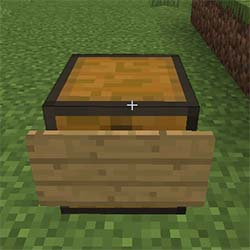

服务器简介
梦の世界成立于2012年7月28日，我们以认真|负责|友爱|公益为目标来维护服务器，服务器成立以来虽然有不少的坎坷但是没有什么困难能阻挡我们前进脚步！我们不断地改进，我们拥有严格的管理制度，为有素质的玩家们提供良好的游戏环境，从未出现，也永远不会出现滥用权限的管理！我们能向你保证服务器素质以及零熊孩子！
新人指南
Item 1-1
...
服务器规则
基本思路
1 民不举，官不究：财产受到侵害请主动向官方报告
2 熊一次，拉清单：玩家的一举一动服务器都有记录
3 只抓贼，不赔损：贵重物品请自己上锁保存防被盗
玩家商店使用指南
创建玩家店铺
创建店铺必须保证自己有银行账户
1 摆放

【按住shift】手持牌子对准空箱子的侧面右键。不在牌子上输入任何文本，点击确认按钮完成牌子的放置
2 设定交易物品的种类：
手持想要交易的物品，右键牌子
3 设定商店模式：
在聊天记录内弹出的界面选择出售或者收购
4 设定物品单价：
向聊天栏内输入数额
5 出售-补货:
打开箱子将货物放入。与商店设定不一致的货物会被自动退还到玩家背包。
完成！
官方收购价
| 鱼类 | |
|---|---|
| 物品名 | 单价 |
| 河豚 | 2 |
| 热带鱼 | 2 |
| 生鳕鱼 | 2 |
| 生鲑鱼 | 2 |
| 肉类 | |
|---|---|
| 物品名 | 单价 |
| 生鸡肉 | 1 |
| 生牛肉 | 1.5 |
| 生猪排 | 1.5 |
| 生羊肉 | 2 |
| 生兔肉 | 3 |
| 熟鸡肉 | 1.5 |
| 熟牛肉 | 2 |
| 熟猪排 | 2 |
| 熟羊肉 | 2.5 |
| 熟兔肉 | 4 |
| 腐肉 | 0.1 |
| 矿物 | |
|---|---|
| 物品名 | 单价 |
| 铁锭 | 4 |
| 金锭 | 8 |
| 钻石 | 30 |
| 绿宝石 | 20 |
| 煤炭 | 0.5 |
| 红石 | 0.5 |
| 青金石 | 0.5 |
| 圆石 | 0.1 |
| 农作物 | |
|---|---|
| 物品名 | 单价 |
| 小麦 | 0.5 |
| 胡萝卜 | 0.4 |
| 土豆 | 0.4 |
| 甜菜 | 0.5 |
| 苹果 | 0.25 |
| 西瓜片 | 0.1 |
| 甘蔗 | 0.1 |
| 南瓜 | 1 |
...
创造-世界展示
秋山市简介
最新开启的秋山计划
Akiyama city（秋山市）的名字源于地形本身的名字——Autumn mountains。地形的作者是MiniRehvaro。
The name of this new city, Akiyama, is originated from the name of it's terrain - Autumn mountains. The author of the terrain is MiniRehvaro from PMC.
秋山市的地形采用的是扁平版的 Autumn mountains，在垂直方向上压缩了百分之50以平缓坡度。
The actual terrain of Akiyama city is a flatten version of Autumn mountains - the blocks has been compressed by 50% in vertical direction in order to ease the slopes.
之所以使用akiyama city作为正式名称，是为了与服务器名称 梦の世界 呼应，使其充满迷惑性*。
Picking Akiyama as the name of the new city / world also matches the confusing nature of server name, which is yume no sekai (means world of dreams)*.
海岛 TROPICO
被放弃的海岛计划

出生点——中央医院
玩家死后只能在这里复活，非常真实
码头
完成转正任务后玩家可以从码头的矿船前往矿物世界

海岛机场
毫无用处的超大花瓶

渔民小屋和公寓
渔民小屋里的老渔民提供钓鱼日常任务
创造-建筑人员

建筑组诚招各位加入！
建筑人员权限组与要求
针对各个权限组的要求
试用期建筑人员：
在至少一个方面（建筑，内饰，规划，基建，装置等）有一定水平并且愿意继续钻研的
【需要】通过1小时无限制建造考核
【需要】在生存世界有自己的住宅
达成以上全部要求后【缴纳一组铁锭】方可成为试用期建筑人员
普通建筑人员：
可以独立完成至少一个方面的建造任务且成品不需要大规模修改便可以部署的
精英建筑人员：
可以独立完成至少一个方面的建造任务且成品几乎不需要修改便可以部署，同时需要有一定的规划能力
建筑仓库
建筑仓库是建筑人员的训练场
建筑仓库使用规则
0，建筑仓库的主要用途有三：试用期建筑人员考核，存放建筑人员的建筑，以及供玩家（包括生存玩家）绘制地图图像
1，任何人都可以在仓库内购买地块。
2，购买地块的数量没有限制，但是对【建设中】的地块数量有限制
生存玩家：1
试用期建筑人员：2
普通建筑人员：2
精英建筑人员：无限制
3，地块边界线处于地块内侧边缘，长宽各为128
4，边界线颜色代表用途：
无颜色：像素画
绿色：普通建筑
黄色：公用建筑/设施/基建摸板
红色：出生点保护区